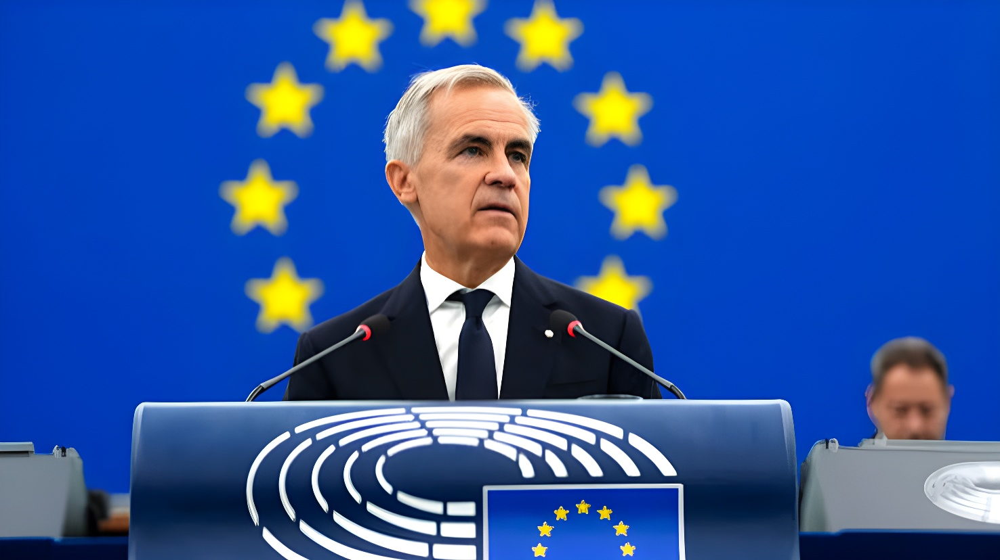

Le 17 septembre 2026, devant le Parlement européen à Strasbourg, le Premier ministre canadien a accueilli avec enthousiasme l'idée, lancée la veille par Ursula von der Leyen, de faire du Canada le premier « membre associé » de l'Union européenne — un statut qui n'existe pas dans les traités. Il l'a fait au lendemain des menaces de Donald Trump, qui a évoqué un possible « acte hostile » et de lourds droits de douane contre l'Europe.
Le 16 septembre 2026, lors de son discours annuel sur l'état de l'Union devant le Parlement européen, la présidente de la Commission Ursula von der Leyen a déclaré vouloir « ouvrir la porte » à un Canada premier « membre associé » de l'UE. Mark Carney, premier chef de gouvernement étranger invité à assister à cet exercice, était au premier rang ; il s'est levé pour la serrer dans ses bras sous les applaudissements des eurodéputés. Elle a plaidé pour dépasser l'accord de libre-échange CETA et bâtir une « Alliance pour l'avenir », un « espace de prospérité commune et de sécurité économique ».
La proposition s'inscrit dans un contexte de forte tension avec Washington. Le Canada envoie environ 70 % de ses exportations aux États-Unis et subit la guerre commerciale de Donald Trump, qui multiplie aussi les propos sur un Canada devenu « 51e État ». L'Europe a pour sa part choisi une autre voie : renoncer aux représailles et accepter des droits de douane américains allant jusqu'à 15 % sur la plupart de ses exportations.
À Davos, Carney appelle les « puissances moyennes » à s'unir plutôt que de négocier seules face à une puissance dominante. Donald Trump le rabroue dès le lendemain.
Carney devient le premier dirigeant non européen à participer à un sommet de la Communauté politique européenne.
Les négociations commerciales entre Ottawa et Washington échouent. Les États-Unis annoncent des droits de douane pouvant atteindre 50 % sur des produits canadiens ; le Canada riposte sur environ 20 milliards de dollars de produits américains.
Au festival de Toronto, Carney affirme que le Canada ne cherche pas à devenir membre de l'UE mais à ouvrir des discussions sur une « alliance unique ».
Von der Leyen propose le statut de « membre associé ». Dans la soirée, depuis Charlotte (Caroline du Nord), Donald Trump menace l'UE de « très lourds » droits de douane si l'initiative relève d'un « acte hostile ».
Carney s'adresse au Parlement européen, salue l'« ambition » de Bruxelles et précise, en conférence de presse, que le Canada ne vise pas l'adhésion pleine et entière.
Carney reçoit les dirigeants européens à Montréal pour un sommet censé détailler la nouvelle relation.
Les traités européens ne prévoient aucun statut de « membre associé ». Ursula von der Leyen n'a pas détaillé les droits et obligations qui en découleraient, et la proposition devra recevoir l'aval des États membres. Selon Euronews, l'article 217 du traité, qui permet à l'Union de conclure des accords d'association avec des pays tiers et sert de base à l'Espace économique européen, pourrait offrir une voie juridique sans aller jusqu'à l'adhésion.
L'idée d'un « membre associé » avait été avancée cette année par le chancelier allemand Friedrich Merz à propos de l'Ukraine, mais elle avait reçu un accueil froid à Kiev, qui réclame l'adhésion pleine. Parmi les modèles existants, la Suisse est associée à l'UE par une série de traités bilatéraux qui lui ouvrent le marché unique et l'espace Schengen.
Le 17 septembre, Carney a commencé son discours en français et déclaré que le Canada « accueille favorablement » l'ambition de Bruxelles, évoquant une « alliance pour l'avenir » à définir ensemble. Il a proposé une coopération approfondie sur les minéraux critiques, la capacité industrielle de défense, l'IA et le calcul, la sécurité énergétique, l'espace et les paiements, ainsi qu'un commerce numérique fluide et un marché intégré des services financiers. Il a aussi plaidé pour que les jeunes puissent vivre, travailler et étudier des deux côtés de l'Atlantique, avec une participation canadienne à Erasmus+ et au prochain programme Horizon. Côté canadien, il a mis en avant plus de 34 minéraux critiques, ainsi que du GNL et de l'hydrogène à grande échelle.
Sans nommer Donald Trump, il a dénoncé un monde où l'intégration économique est « instrumentalisée » et où les droits de douane servent de moyen de pression. Il a toutefois assuré ne pas proposer un « troisième bloc » rival des grandes puissances. En conférence de presse aux côtés de Roberta Metsola, il a précisé que le Canada ne cherchait pas l'adhésion pleine, que la « nomenclature » revenait à l'Europe, que seule comptait la substance, et que le résultat final serait soumis à un vote du Parlement canadien. Il a ajouté que l'alliance n'était pas une « réaction » aux menaces américaines et ferait du Canada « un meilleur partenaire des États-Unis ».
Depuis Charlotte, le 16 septembre, Donald Trump a déclaré que si l'Europe agissait avec de « mauvaises intentions », elle s'exposerait à de « très lourds » droits de douane, allant jusqu'à un arrêt des échanges « sur de nombreux produits ». Il a qualifié le Canada de « terrible partenaire commercial ». Le porte-parole de la Commission, Olof Gill, a répondu que le renforcement du partenariat n'était « pas contre quiconque ». La présidente du Parlement européen, Roberta Metsola, a estimé que Washington n'avait aucune raison de riposter et suggéré que l'Australie et la Nouvelle-Zélande pourraient suivre.
Interrogé sur les propos de Trump, Carney a répondu que les Canadiens étaient unis pour refuser que quiconque leur dicte leur langue, leur culture ou les partenaires avec lesquels ils concluent des accords. À Ottawa, le chef conservateur Pierre Poilievre accuse le Premier ministre de se contredire entre ses déclarations du 13 septembre et celles de Strasbourg, et rejette toute imposition de « taxes », de « lois » ou de politiques d'immigration européennes. Un sondage Abacus Data (1 479 adultes, 4-9 septembre) montre toutefois 81 % de Canadiens favorables à une intégration plus étroite avec l'UE, contre 10 % d'opposés.
| Acteur | Position, 16-17 septembre 2026 |
|---|---|
| Mark Carney | Accueille l'« ambition » ; exclut l'adhésion pleine ; vote final au Parlement |
| Ursula von der Leyen | Propose d'« ouvrir la porte » au statut de membre associé |
| Roberta Metsola | Soutient ; « pas contre quiconque » ; l'Australie et la N.-Zélande pourraient suivre |
| Irlande, Espagne | Soutien explicite (Helen McEntee, Pedro Sánchez) |
| France | Statut à examiner ; liens plus étroits avec le Canada souhaités (J.-N. Barrot) |
| Donald Trump | Menace de droits de douane « très lourds » si « acte hostile » |
| Pierre Poilievre | Dénonce des messages contradictoires et un risque pour la souveraineté |
« Je ne propose pas un troisième bloc pour devenir un rival de grande puissance — simplement avec de meilleures manières. »
— Mark Carney, Parlement européen, 17 septembre 2026 (traduction)« Il s'agit d'un partenariat non pas contre quelqu'un d'autre, mais pour notre force commune. »
— Ursula von der Leyen, discours sur l'état de l'Union, 16 septembre 2026 (traduction)Au-delà de l'étiquette, tout reste à écrire : le statut de « membre associé » n'existe pas, ses contours n'ont pas été précisés et il faudra convaincre les États membres. Carney a lui-même laissé à Bruxelles le soin de trancher la « nomenclature » et promis un vote final à Ottawa, tandis que l'opposition conservatrice y voit un risque pour la souveraineté. Reste l'équation économique : avec environ 70 % de ses exportations tournées vers les États-Unis, le Canada ne peut pas pivoter rapidement vers l'Europe, même s'il a déjà rejoint SAFE et engagé des discussions sur Erasmus+. Le sommet de Montréal des 29 et 30 octobre dira si l'« Alliance pour l'avenir » prend une forme concrète, et comment Bruxelles gérera la menace de représailles de Washington.
On 17 September 2026, addressing the European Parliament in Strasbourg, the Canadian prime minister welcomed the idea, floated the day before by Ursula von der Leyen, of making Canada the European Union's first "associate member" — a status that does not exist in the EU treaties. He did so a day after Donald Trump suggested the move could be a "hostile act" and threatened heavy tariffs on Europe.
On 16 September 2026, in her annual State of the Union address to the European Parliament, Commission President Ursula von der Leyen said she wanted to work on "opening the door for Canada to be the first associate member of the EU." Mark Carney, the first foreign head of government to attend the speech, sat in the front row; he rose to embrace her as lawmakers applauded. She called for moving beyond the CETA free trade agreement toward an "Alliance for the Future," a "common prosperity and economic security space."
The proposal comes amid deep tension with Washington. Canada sends roughly 70% of its exports to the United States and is caught in Donald Trump's trade war, while Trump keeps floating the idea of Canada as the "51st state." Europe took a different path: it shelved retaliation and accepted US tariffs of up to 15% on most of its exports.
In Davos, Carney urges "middle powers" to join forces rather than negotiate alone against a dominant power. Donald Trump rebukes him the next day.
Carney becomes the first non-European leader to attend a summit of the European Political Community.
Trade talks between Ottawa and Washington collapse. The US announces tariffs of up to 50% on Canadian products; Canada retaliates on roughly $20 billion worth of US goods.
At the Toronto film festival, Carney says Canada is not looking to become a member of the EU, but to start discussions on a "unique alliance."
Von der Leyen proposes "associate member" status. Later that day, in Charlotte, North Carolina, Donald Trump threatens "very heavy tariffs" on the EU if the move is a "hostile act."
Carney addresses the European Parliament, welcomes Brussels' "ambition," and tells reporters Canada is not seeking full membership.
Carney is to host EU leaders in Montreal for a summit meant to detail the new relationship.
EU treaties make no provision for "associate membership." Ursula von der Leyen did not spell out the rights and obligations involved, and the proposal would need the backing of member states. According to Euronews, Article 217 of the treaties, which lets the Union conclude association agreements with third countries and underpins the European Economic Area, could offer a legal route short of full membership.
The "associate member" idea was first floated this year by German Chancellor Friedrich Merz regarding Ukraine, but it met a cold reception in Kyiv, which is pushing for full membership. Among existing models, Switzerland is tied to the EU through a series of bilateral treaties that give it access to the single market and the Schengen area.
On 17 September, Carney opened his speech in French and said Canada "welcomes" Brussels' ambition, describing an "alliance for the future" to be defined together. He proposed deep cooperation on critical minerals, defence industrial capacity, AI and compute, energy security, space and payments, along with seamless digital trade and an integrated market for financial services. He also called for young people to live, work and study on both sides of the Atlantic, with Canadian participation in Erasmus+ and the next Horizon programme. On Canada's side, he pointed to more than 34 critical minerals, plus LNG and hydrogen at large scale.
Without naming Donald Trump, he denounced a world in which economic integration is being "weaponised" and tariffs used as a means of pressure. He insisted, however, that he was not proposing a "third bloc" to rival the great powers. At a press conference alongside Roberta Metsola, he clarified that Canada was not seeking full membership, that the "nomenclature" was for Europe to settle, that only the substance mattered, and that the final structure would be put to a vote in Canada's Parliament. He added that the alliance was not a "reaction" to US threats and would make Canada "a better partner with the United States."
Speaking in Charlotte on 16 September, Donald Trump said that if Europe acted with "bad intentions," it would face "very heavy tariffs," even a halt to trade "on many things." He called Canada a "terrible trade partner." Commission spokesperson Olof Gill replied that the closer partnership was "not against anyone else." European Parliament President Roberta Metsola said Washington had no grounds for retaliation and suggested Australia and New Zealand could follow Canada.
Asked about Trump's remarks, Carney said Canadians were united in refusing to let anyone dictate their language, culture, or with whom they strike international agreements. In Ottawa, Conservative leader Pierre Poilievre accuses the prime minister of contradicting himself between his 13 September remarks and those in Strasbourg, and rejects any "EU taxes," "EU laws" or EU immigration policies. An Abacus Data poll (1,479 adults, September 4–9) nonetheless shows 81% of Canadians supporting closer integration with the EU, versus 10% opposed.
| Actor | Position, Sept. 16–17, 2026 |
|---|---|
| Mark Carney | Welcomes the "ambition"; rules out full membership; final vote in Parliament |
| Ursula von der Leyen | Proposes "opening the door" to associate member status |
| Roberta Metsola | Supportive; "not against anyone"; Australia and NZ could follow |
| Ireland, Spain | Explicit support (Helen McEntee, Pedro Sánchez) |
| France | Status to be examined; wants closer ties with Canada (J.-N. Barrot) |
| Donald Trump | Threatens "very heavy tariffs" if a "hostile act" |
| Pierre Poilievre | Denounces mixed messages and a risk to sovereignty |
"I am not proposing a third bloc in order to become a great-power rival – only with better manners."
— Mark Carney, European Parliament, September 17, 2026"This is a partnership not against anyone else, but for our common strength."
— Ursula von der Leyen, State of the Union address, September 16, 2026Beyond the label, almost everything remains to be written: "associate member" status does not exist, its contours have not been set, and member states still need to be convinced. Carney himself left the "nomenclature" for Brussels to settle and promised a final vote in Ottawa, while the Conservative opposition sees a risk to sovereignty. Then there is the economic equation: with roughly 70% of its exports going to the United States, Canada cannot pivot quickly toward Europe, even though it has already joined SAFE and opened talks on Erasmus+. The Montreal summit on 29–30 October will show whether the "Alliance for the Future" takes concrete shape, and how Brussels handles the threat of retaliation from Washington.